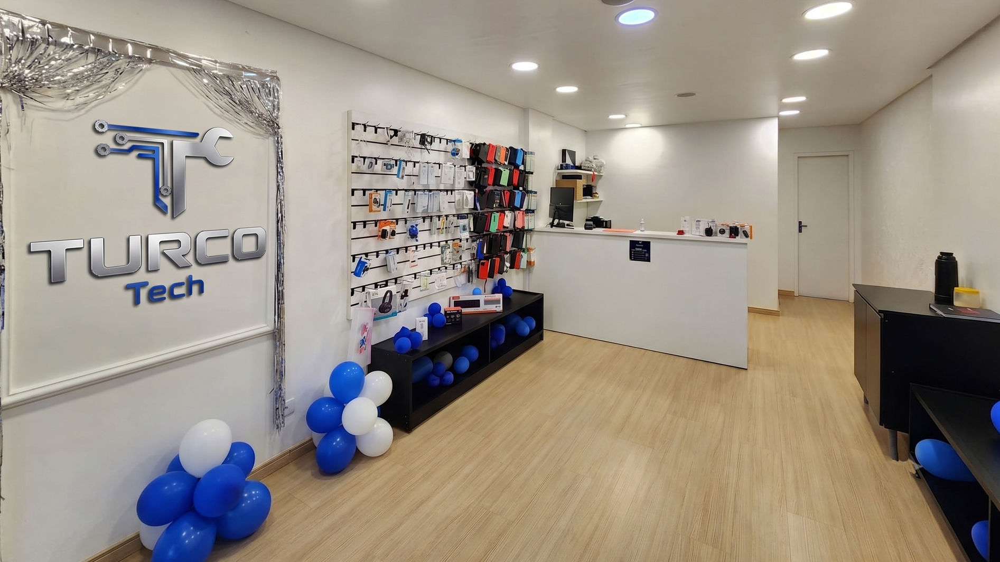

Celular
Tela quebrada, bateria, conector de carga e reparos gerais em smartphones.
Orçar reparo de celular ↗ASSISTÊNCIA TÉCNICA EM CASCAVEL
Reparos em celulares, tablets, notebooks e computadores. Tecnologia e confiança em cada atendimento, do primeiro contato à entrega.
Pedir meu orçamento ↗Conhecer os serviços ↓O QUE PRECISA DE CUIDADO?
Um caminho mais simples para explicar o que aconteceu e conversar com a equipe.
Tela quebrada, bateria, conector de carga e reparos gerais em smartphones.
Orçar reparo de celular ↗Troca de tela, bateria e conserto de tablets de diferentes marcas.
Orçar reparo de tablet ↗Tela, teclado, memória, HD/SSD, limpeza e manutenção do seu notebook.
Orçar reparo de notebook ↗Montagem, upgrade, formatação, limpeza e troca de peças do seu PC.
Orçar reparo de PC ↗CUIDADO QUE CONTINUA DEPOIS DO REPARO
Cobertura para falhas relacionadas ao serviço realizado ou à peça instalada.
O prazo depende do reparo e da avaliação. Fale com a equipe sobre o seu caso.
Reparos em iPhone, Samsung, Motorola, Xiaomi e outras marcas.

CASCAVEL · PARANÁGENTE DE VERDADE. UMA LOJA PERTO DE VOCÊ.
À frente da TurcoTech está o Vitor, conhecido como Turco. Depois de um incêndio atingir a loja, a empresa recomeçou em um novo espaço, com a mesma dedicação a cada cliente.
Conheça nossa casa e conte com a equipe para cuidar do seu aparelho.
Rua Presidente Bernardes, 2402 · Sala 02QUEM CONFIA RECOMENDA
“Excelente trabalho. Ótimo atendimento, rapidez. Muito obrigada pela ajuda e assistência.”
“Preço justo e honestidade! Muito bom.”
“Otimo Atendimento e Servico ! Recomendo a Loja”
ANTES DE TRAZER SEU APARELHO
Escolha seu aparelho e envie pelo WhatsApp o modelo e uma descrição do problema. A equipe orientará sobre avaliação e orçamento.
O prazo varia conforme o defeito, a avaliação e a disponibilidade de peças. Confirme diretamente com a equipe antes de deixar o aparelho.
A TurcoTech divulga 6 meses de garantia para falhas relacionadas ao serviço ou à peça instalada. Consulte as condições para o seu reparo.
Segunda a sexta: 8h às 20h. Sábado: 8h às 16h. Domingo: 9h às 15h. Confirme o funcionamento em feriados pelo WhatsApp.
VAMOS CUIDAR DO SEU APARELHO?
Escolha o aparelho e descreva o problema para iniciar seu atendimento pelo WhatsApp.